VULTUR

Terminal Velocity
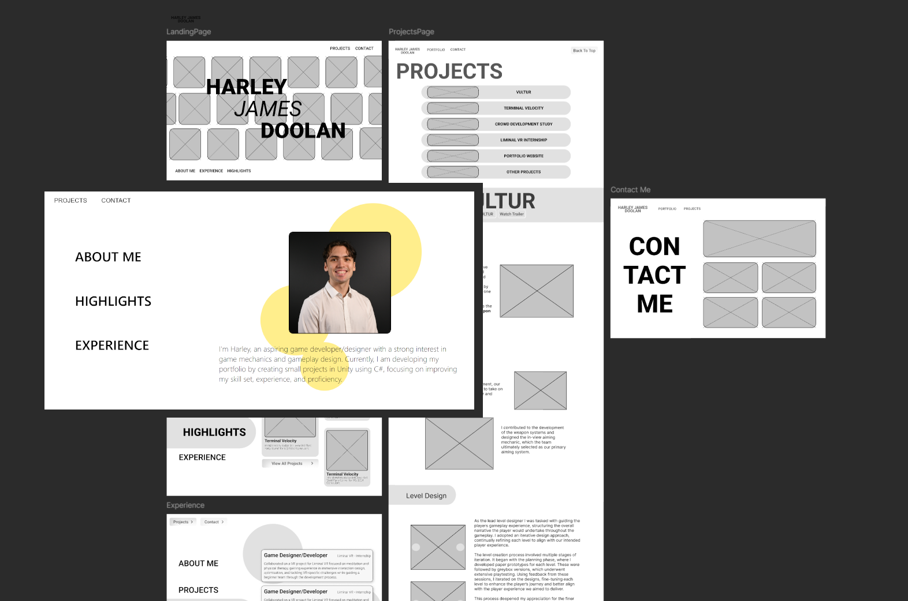
Website Designing and Development
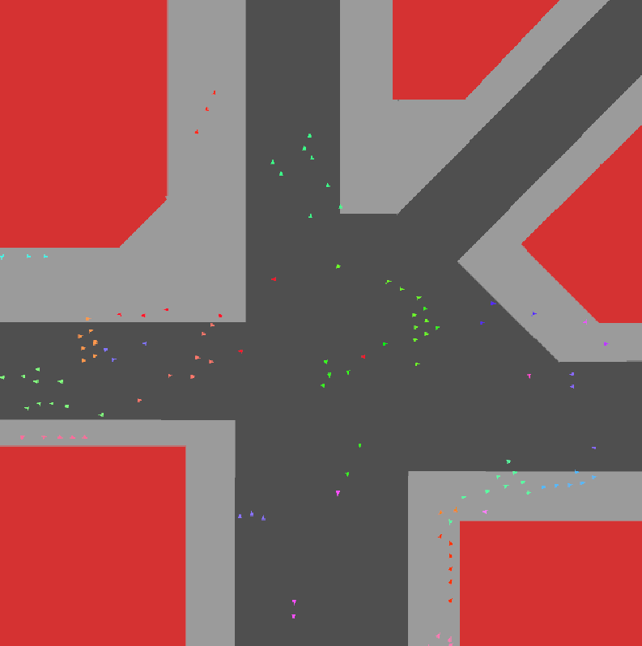
Crowd Development Study
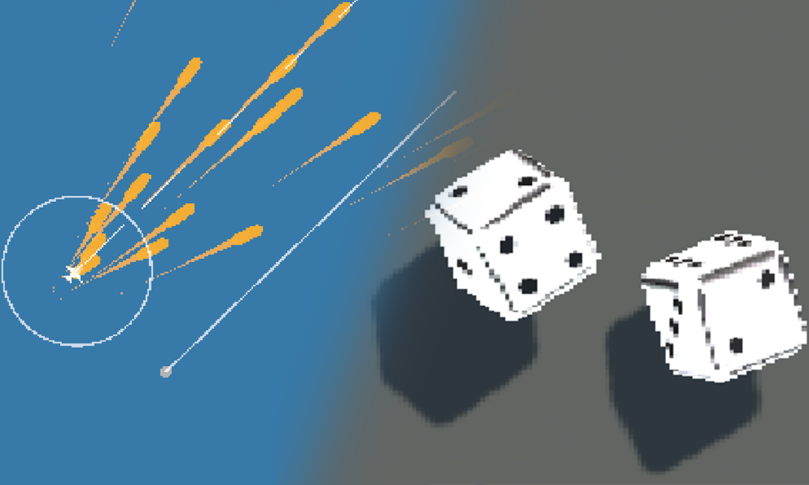
In Development Projects





VULTUR is by far the largest project I have worked on, with the largest team I have worked with, consisting of seven members in total. My role on this project was the lead level designer and lead weapon designer.
In the early stages of development, our smaller team size required me to take on dual roles as both programmer and designer. I contributed to the development of the weapon systems and designed the in-view aiming mechanic, which the team ultimately selected as our primary aiming system.
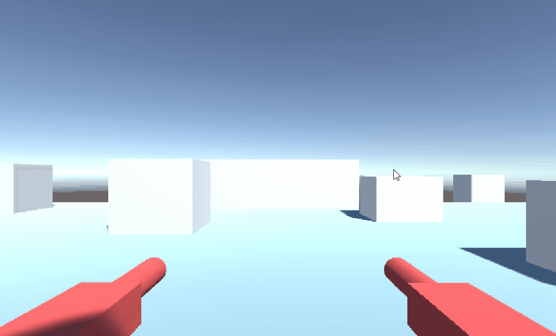

As the lead level designer I was tasked with guiding the players gameplay experience, structuring the overall narrative the player would undertake throughout the gameplay. I adopted an iterative design approach, continually refining each level to align with our intended player experience.
The level creation process involved multiple stages of iteration. It began with the planning phase, where I developed paper prototypes for each level. These were followed by greybox versions, which underwent extensive playtesting. Using feedback from these sessions, I iterated on the designs, fine-tuning each level to enhance the player’s journey and better align with the player experience we aimed to deliver.
This process deepened my appreciation for the finer details of level design. I found it thrilling to observe how subtle changes in elements like lighting or framing could drastically influence how players navigated a level. Through this, I expanded my understanding of how designers can guide and shape a player’s experience. I began to see myself as a tour guide, leading players on an immersive journey through the world we created.
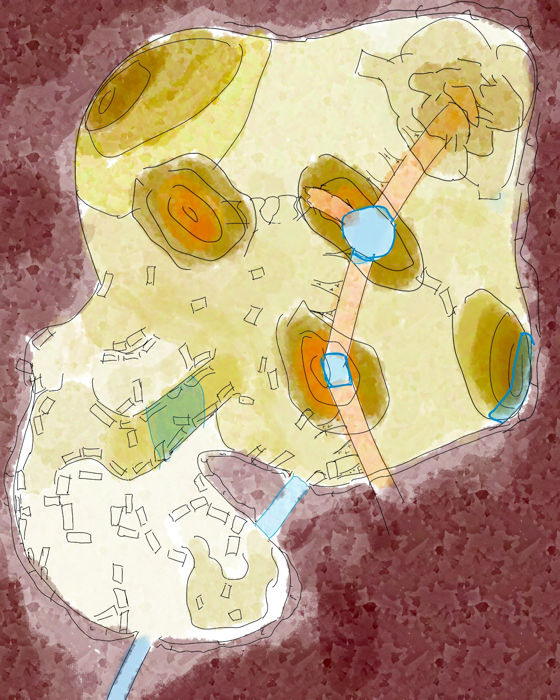
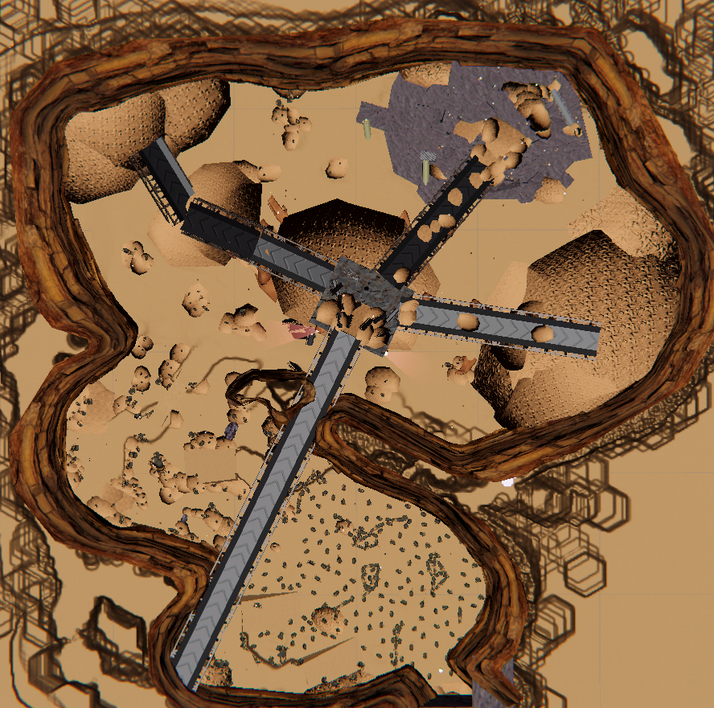


As the lead weapons designer, my role mirrored my responsibilities in level design; aligning mechanics with the intended player experience and validating them through testing. Unlike level design, weapon development progressed in order of complexity. This iterative approach allowed me to create overlapping mechanics, tailoring weapons to a diverse range of playstyles. This afforded me the opportunity to learn a different and unique skill of designing tools for the player, compared with designing the games base mechanics.
My goal was to craft a cohesive gameplay experience where each weapon supported different strategies, from aggressive combat to long-range tactics, while giving players the freedom to experiment with various combinations. Through continuous refinement, I ensured each weapon was functional, engaging, and versatile, ultimately contributing to the game’s balance and enhancing player immersion.


Because of our great reception throughout the development of VULTUR Macquarie University pushed us forward to present VULTUR at the SXSW Games Festival Showcase in 2024. This was a great opportunity for my team and I to explore the industry and make some valuable connections. It was also a great opportunity for our game to receive a wider amount of playtesting, providing me with more valuable hands on data of how players interact with the level design, and the weapon types.
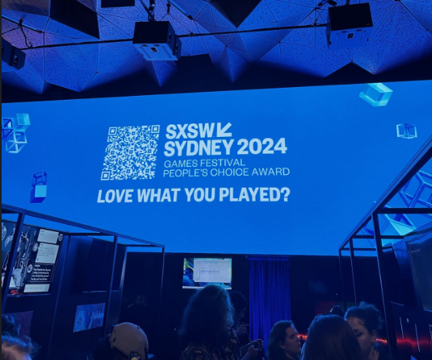
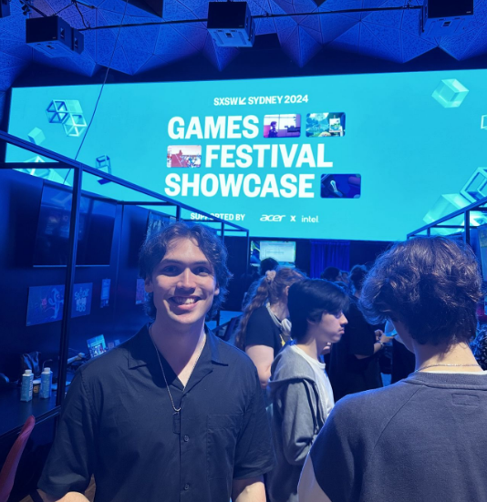
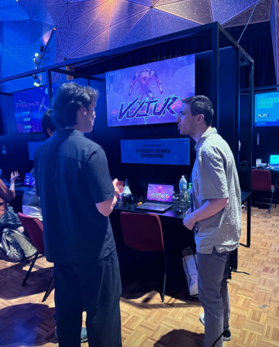
Developed over 7 days as a part of the Macquarie Re-Entry Game Jam. Terminal Velocity is a fun quick paced interplanetary dodgeball. With an unlimited player limit this game is a blast for any group. This game was awarded "Best Party Game" for the Game Jam.
For this project I was the lead creative design director. This role entailed overall game design and management of the team to ensure we all shared the same vision of the project. I also was the lead level designer, this role encouraged rapid playtesting to ensure the level encouraged correct play behaviour. This project was done in one week as part of the Macquarie 'Re-entry' Game-Jam. This time pressure made it crucial that our features were simple but still delivered the intended gameplay experience of a shifting power dynamic and tension between players.
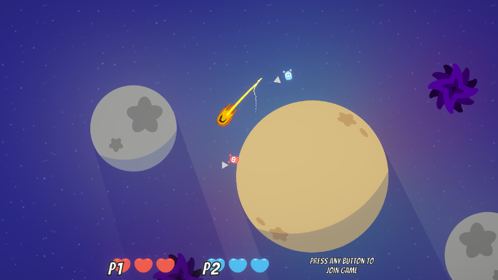
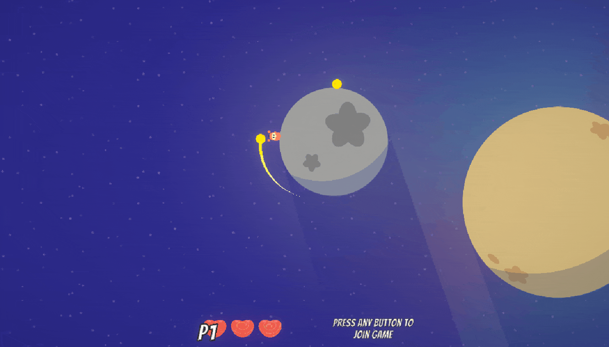
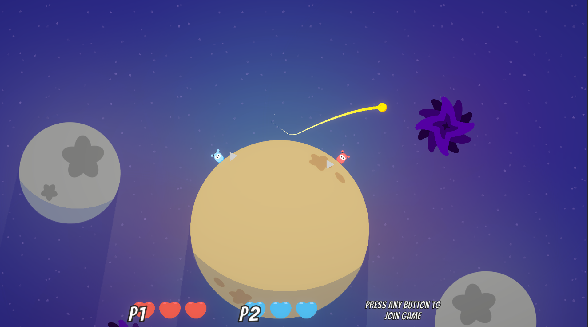
Since the game jam, because of our achievement as crowd favourite and Best Party Game me and my team went on to showcase Terminal Velocity while working alongside Macquarie University at many events including the University open days and the Macquarie Observatory for expo nights. These events showcased the immense fun and community our game could cultivate, and will go on to serve as a useful tool for Macquarie University to add some flair to their future events.
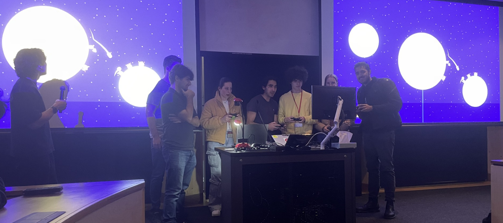
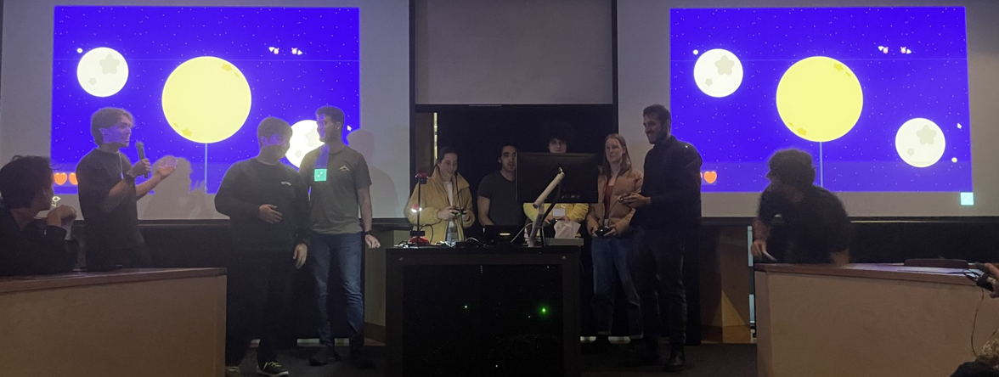
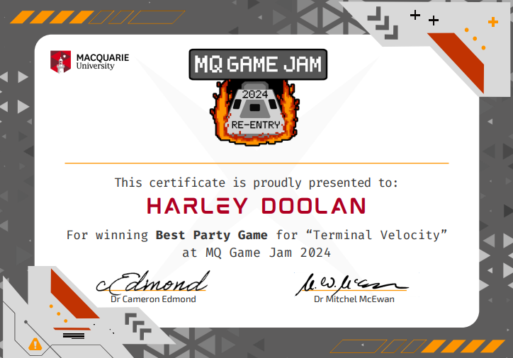
During university I created a portfolio website to demonstrate my skill and experience. To create this first iteration I used google sites. This allowed me to quickly test page flow and content grouping.
I quickly wanted to create a custom website to build my HTML, CSS, and Javascript skills, with the added bonus of complete customisation to tailor towards my own style. I created a small website to gain experience with page publication and data load times, but wanted more complexity for the design.
Using Figma I iterated on the design of my final website. This allowed me to test the user experience and intuitiveness of the UI. It was very important to me that the page is easy to navigate. This caused many difficult decisions between intuitiveness or interesting visual design. I used a wireframe mockup to focus on size and shape heirarchy of the website, allowing better visual clarity of the final result.
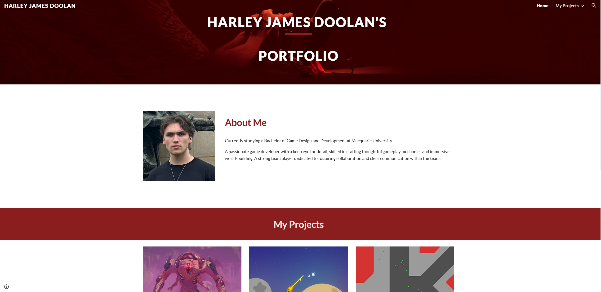
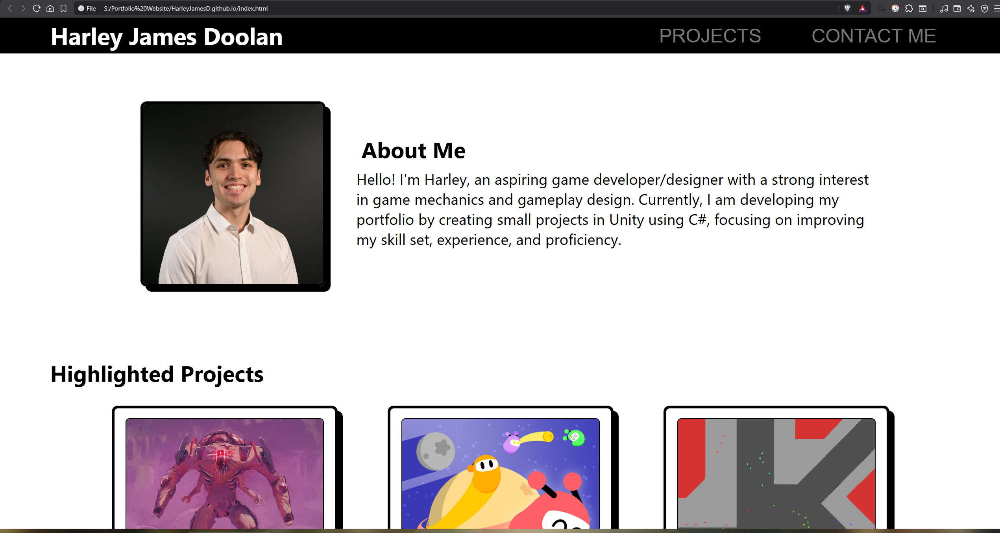
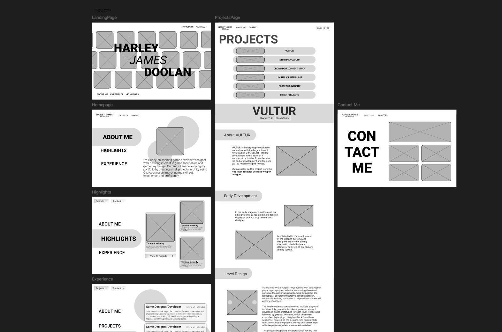
Using GitHub to host my website for free I used HTML, and CSS to create the building blocks of my website. I used Javascript to create the functionality and interactivity of elements on my pages.
This project was a self research study about simulating realistic social behaviours of crowds. It took 13 weeks to complete this project, with a mixture of self research and incremental development. This project taught me the fundamentals of constructive self research, increasing my ability to adapt and learn new skills quickly. It also gave me extended experience using playtests to evaluate success and investigate future direction.
I chose to research crowd simulations because AI was one of my weakest areas of expertise. My goal was to learn how to effectively research unfamiliar topics, enabling me to expand my expertise in new areas. Through this project, I not only gained a solid understanding of crowd simulation fundamentals but also developed essential skills in constructive self-research, enhancing my ability to quickly adapt and acquire new knowledge. Throughout the development process, we held weekly meetings to evaluate progress and refine our direction. These sessions played a crucial role in breaking the research into manageable, structured categories, each building upon the last. This iterative approach allowed me to progressively deepen my understanding of the subject. Furthermore, it significantly improved my communication skills, as I regularly presented research findings and project updates through clear documentation and dialogue, fostering both clarity and confidence in my ability to convey complex ideas.
To improve efficiency when developing my crowd simulation I started engaging with creating editor tools. These were small features the player wouldn't see but would improve quality of life to myself or other developers of the project. Learning how to construct these is crucial for creating publicly available tools or improving productivity in a team.
Playtests were developed and refined continuously throughout the project, and this iterative process taught me valuable skills. Designing an efficient playtest required a deep understanding of how to craft questions that elicit the most insightful and productive feedback. I learned to identify where certain questions fell short in gathering useful information and how to address those gaps by refining or adding complementary questions. Additionally, I became more attuned to the nuances of question wording, and how it could inadvertently mislead playtesters or introduce biases. This awareness helped me design more neutral, effective surveys and interviews. Another critical aspect I explored was the ethical considerations of each question, ensuring that they were respectful and did not negatively impact the playtesters. Developing this ethical sensitivity is an essential skill when conducting any form of research, as it promotes integrity and protects the well-being of participants.
This project provided extensive experience in using playtests to evaluate the success of my work and explore future directions. It included the most comprehensive playtest I’ve conducted, which enabled me to assess the effectiveness of my project and identify areas for further investigation. Through this playtest, I uncovered intriguing patterns in how certain changes affect a viewer’s perception of realism. These insights prompted me to shift my research focus toward identifying the most essential features of a crowd simulation and determining which elements were less critical. The iterative process of playtesting allowed me to fine-tune my project, ensuring it closely aligned with my research goals. Additionally, it provided unexpected insights into aspects of the project I had not previously considered. Ultimately, this process led to a final product that not only delivers the intended experience but also offers valuable perspectives on crowd simulation design.
This is an RNG strategy game I have been developing, with a focus on building skills in event based systems, decoupling, and managing execution order.
In this game you try to "beat" a die (aka the Bomb Die), you beat it by creating patterns which increments the die, creating a pattern when the die is on 6 will result in a successful diffuse. Not creating a pattern in 4 rolls will decrement the die. The player has to use strategy tools to boost their odds and maximise their luck.
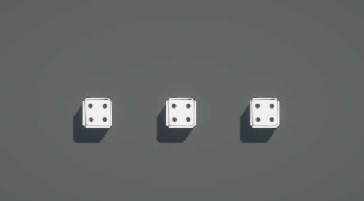
This is a top down 2D shooter I have been developing, with a focus on building skills in design patterns, inheritance, decoupling, object pooling, and abstraction. With three main behaviour trees (bullet behaviour, weapon behaviour, enemyMovement behaviour) it was a perfect way for me to build my skills in behaviour patterns. Using object pooling allowed me to improve optimisation of instantiating objects.

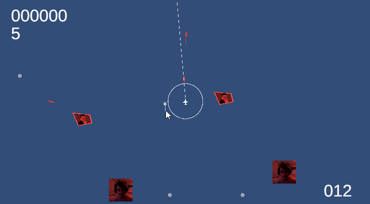
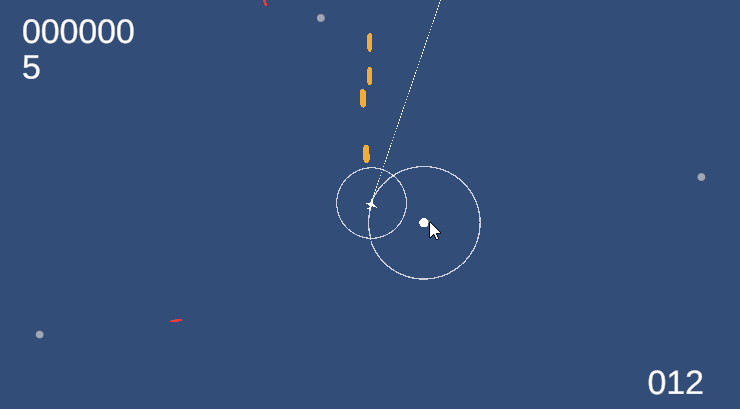
A solo-developed physics platformer with all the code and art done by me. Started as a Game Jam entryfor the GMTK 2025 Game Jam, then completely rebuilt from scratch in March 2026.
I used visual weight to communicate danger before it happens, wider, stable platforms early on feel safe, while narrower geometry higher up quietly signals risk. Branching paths give the player real choices, which matters because different routes become viable at different points in the loop. Level data is split across a visual tilemap and a hidden metadata tilemap, so I can tweak the look or the wave timing independently without either breaking the other.
A lot of this rebuild was about writing code that's easier to work with. A few things came together well:
I integrated Unity Gaming Services to add a global leaderboard, anonymous sign-in on launch, time submitted on completion. The whole flow is async/await, which was new to me coming from coroutines. One gotcha: the SDK returns metadata as a raw JSON string rather than a typed dictionary, so I had to deserialise it with Newtonsoft.Json to read player names back out, something the docs don't make obvious.
Using tools for pixel art I was able to create a more personalised visual style for my game. Creating animations for the player character bridged a huge gap between the player and visual gameplay feedback that was missing from the original build of the game. It allowed me to add more complexity to the environment and build more empathy towards the player character as he is quite adorable.
Old:
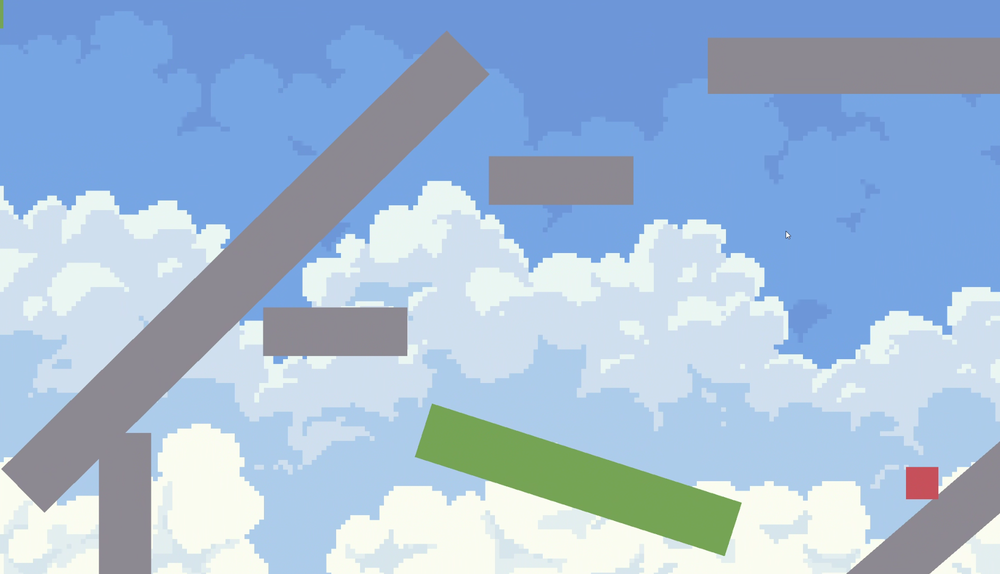
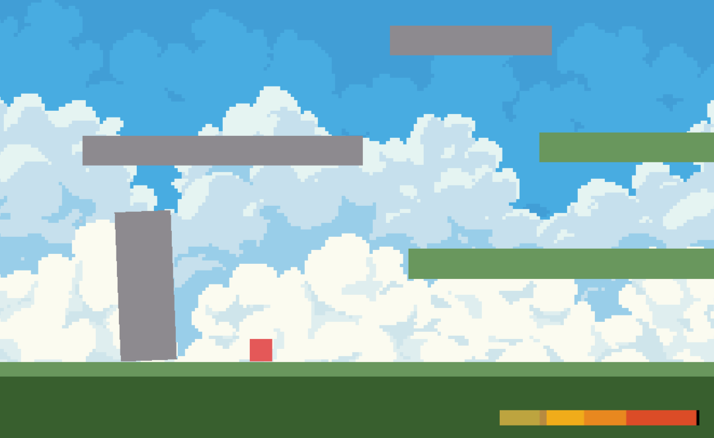
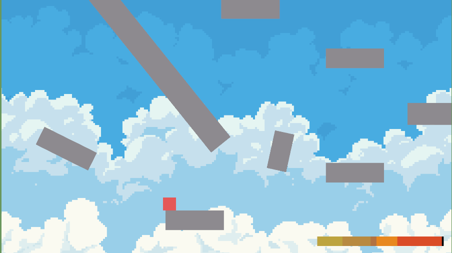
One of my earliest game projects, I was in charge of level design and programming some obstacles. Being in charge of level design for a puzzle platformer required me to think outside the box and create satisfying solutions that integrate seamlessly into the games mechanics.


This project had a team only consisting of me and one artist. I was the lead programmer and game designer. My time as the lead programmer was an extremely valuable experience, allowing me to build my skills in an area I was weak in at the time. As the project only had a development time of two days, my experience as the lead designer cemented my core design fundamentals. I had to prioritise the core gameplay mechanics and fight off scope creep, and I was forced to focus on creating the core fun of the experience.